How to Use China's High-Speed Trains
as a Foreigner (2026 Guide)
TL;DR — The Short Version
- China's high-speed rail is genuinely impressive — clean, punctual, and shockingly affordable
- Book via Trip.com (easiest) or the official 12306 app (cheapest, has English)
- Bring your physical passport. Your passport is your ticket — no paper pickup needed
- Arrive at the station 45–60 minutes early for your first trip — security lines can be long
- Three seat classes: Second (cheap, comfortable), First (wider seats), Business (lie-flat, lounge access)
The Train System Foreigners Can't Believe Exists
I've taken high-speed trains in Japan, France, Germany, and Italy. China's system is bigger than all of them combined — over 40,000 km of track connecting every major city — and somehow, it's also the cheapest. A 5-hour ride from Shanghai to Beijing costs about ¥550 ($75) in second class. The same distance in France would be triple that.
The trains run at 300–350 km/h (186–217 mph). They leave exactly on time — not "roughly," not "give or take" — the doors close 3–5 minutes before departure and you are not getting on after that. Every station has English signage. Every seat has a power outlet. The WiFi is unreliable (Chinese intranet only, no Google), but the ride is so smooth you can balance a coin on its edge on the tray table. I've done this. It stayed standing for 20 minutes.
Here's everything you need to know to ride them — from booking your first ticket to walking off the platform like you've done it a hundred times.
How to Book Tickets
There are three ways. Here they are, ranked from easiest to most involved.
1 Trip.com (Easiest — Recommended for First-Timers)
Trip.com (formerly Ctrip) is an English-language travel platform. It's not the official railway app, so tickets cost about ¥30–50 ($4–7) more per booking in service fees. For that small premium, you get:
- Full English interface. Search cities, dates, seat classes — all in English. No translation apps needed.
- Foreign card payment. Visa, Mastercard, Amex — all accepted. No Chinese bank account required.
- Clear seat selection. You can see which seats are available and pick window or aisle.
The tradeoff: Trip.com is a third party. If a train gets canceled or you need to change your ticket, you're going through their customer service — not the railway directly. For 90% of trips this is fine. For complex itineraries, use 12306.
2 Railway 12306 — Official, Cheapest, No Fees
12306 is the official China Railway system. It's the only place to buy tickets at face value with zero booking fees. And you don't need to download a separate app —12306 works as a mini-program inside Alipay. Just open Alipay, search "12306," and tap Railway 12306. No app store, no extra download, no registration hassle. There's also a standalone app if you prefer, but the Alipay mini-program does the same thing and is already on your phone if you have Alipay installed.
Two ways to use 12306:
- Alipay mini-program (recommended). Open Alipay — Search "12306" — Tap Railway 12306. You're in. No extra setup — it uses your Alipay account and linked payment method. We walk through the full booking flow with screenshots below .
- Standalone app. Download "Railway 12306" from your app store. The icon is a blue and red train on a white background. You'll need to register separately with your passport number and verify your identity — either via a Chinese phone number or in person at a station ticket window.
3 Buy at the Station (Last Resort)
You can walk up to any train station ticket window with your passport and buy a ticket for the next available train. But here's why you shouldn't:
- Popular routes (Shanghai–Beijing, Hangzhou–Shanghai, Guangzhou–Shenzhen) sell out hours or days in advance
- The ticket agent might not speak English — have your destination written in Chinese
- You'll almost certainly get a worse seat (middle seat, last row) or a later train than you wanted
Use this only if your plans changed and you're already at the station. Otherwise, book ahead.
Seat Classes Explained
China high-speed trains (G-series and D-series) have three classes. They're not like European classes — the gap between Second and First is modest, but Business is a whole different world.
Second Class
3+2 seating. Plenty of legroom. Power outlet under every seat. This is what 90% of people take — and it's already better than most European first class. Example price: Shanghai — Beijing (5 hours).
First Class
2+2 seating. Wider seats, more recline, slightly more legroom. Quieter car. Worth it for trips over 4 hours if you want to work or sleep. About 70% more than Second Class.
👑 Business Class
2+1 or 1+1 lie-flat seats. Dedicated check-in counter, lounge access with free drinks and snacks, priority boarding. Feels like an international first-class flight. About 3× Second Class.
Step-by-Step: Book via Alipay (With Screenshots)
This is the most reliable way to book directly through China's official railway system — using the 12306 mini-program inside Alipay. Fair warning: the process has a lot of steps. But read each one carefully. One wrong tap — picking the wrong station, skipping the passport field — can cost you hours on travel day. I've seen it happen.
1 Open Alipay and tap the Search bar
Launch Alipay. At the top of the home screen, tap the Search bar.
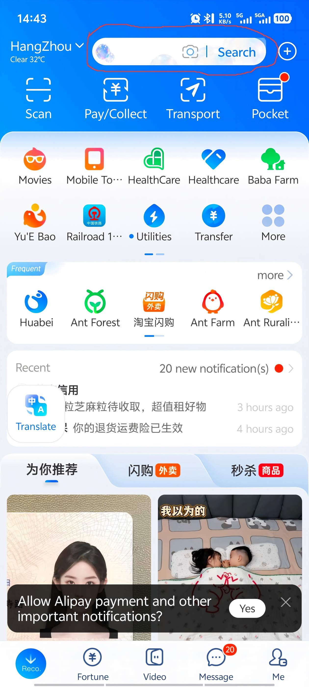
2 Search for "12306"
Type 12306 in the search box. The top result will be Railway 12306 — a mini-program with a blue and red train icon. This is the official China Railway mini-program, not a third-party service. It's safe to use.
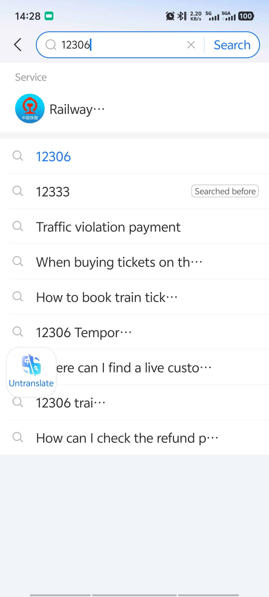
3 Enter the mini-program and set your route
Tap Railway 12306. You'll see the main booking screen: departure city on the left, destination city on the right. Check the box below the cities that says "Only view high-speed rail" — this filters out slow trains.
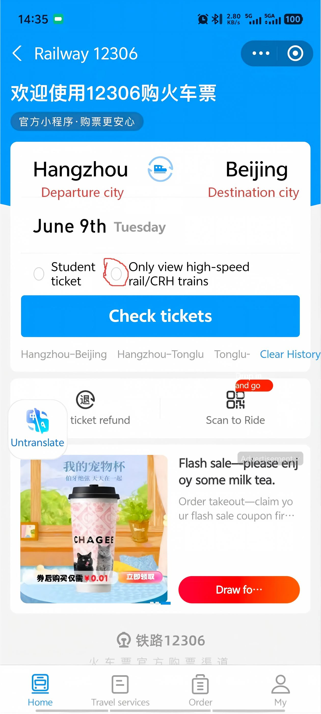
4 Choose your departure city and station
Tap the departure city box. Type the pinyin of your city — for example, "hangzhou" for Hangzhou. You'll see "City Hangzhou City" plus a list of specific stations: Hangzhou East Station, Hangzhou Station, Hangzhou South Railway Station, Hangzhou West Railway Station.
Do NOT just select the city name. Most Chinese cities have multiple train stations, and they can be an hour apart by metro. Pick the specific station closest to where you're staying. If you select just the city, the system picks a default — which might be the wrong one.
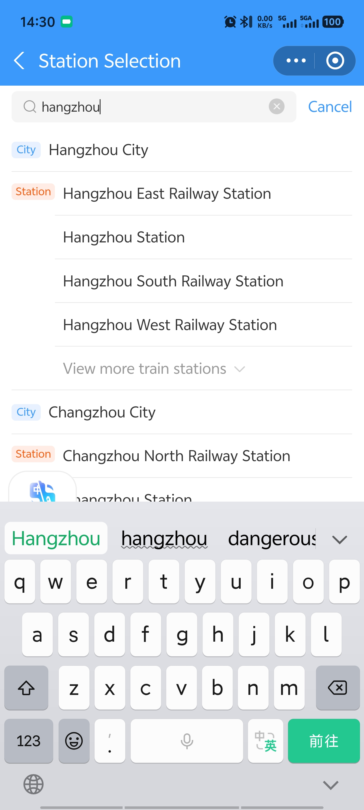
5 Choose your destination city and station
Tap the destination city box. Type the pinyin — for example, "beijing". Beijing has more stations than any other city in China. You must know which station is closest to your destination. Beijing South serves high-speed trains from Shanghai and Hangzhou; Beijing West serves routes from the south and west. Pick the wrong one and you'll face a long cross-city transfer.
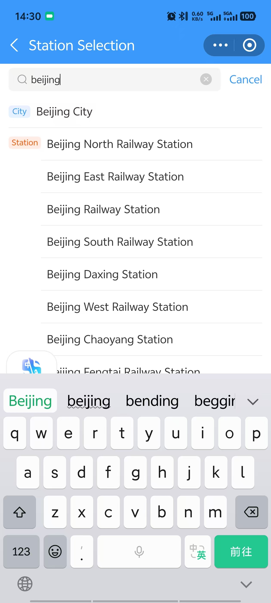
6 Tap "Check Tickets"
With both stations selected, tap the Check tickets button.
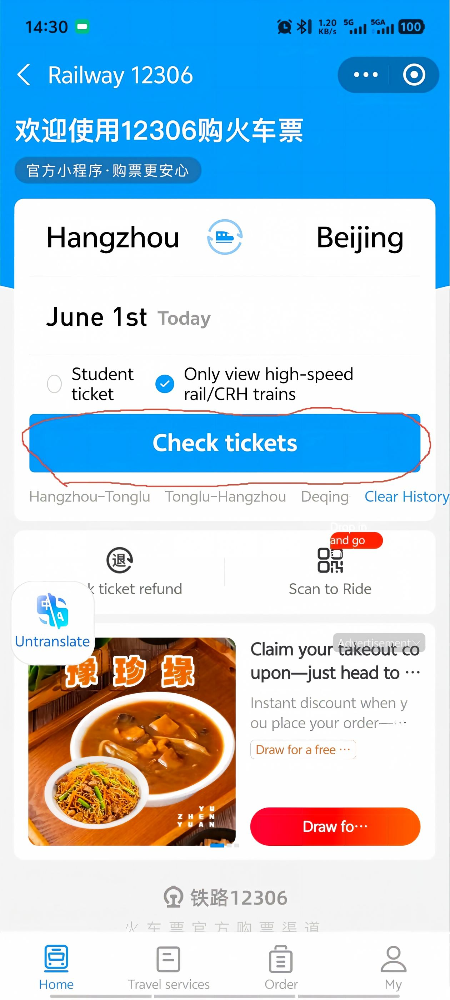
7 Select your travel date
The screen defaults to today's trains. Tap the calendar icon at the top of the page to pick your departure date. Tickets are usually available 15 days before departure.
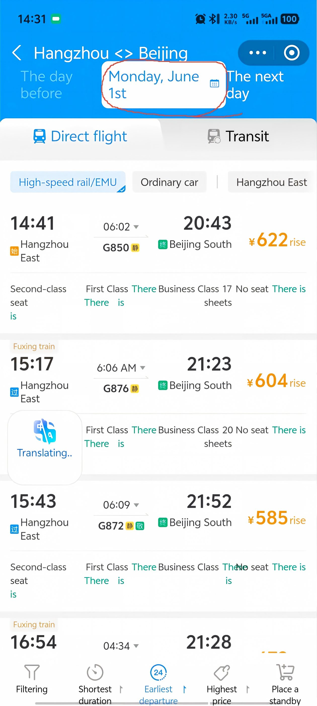
8 Pick your date (up to 15 days ahead)
Select your date from the calendar. The available trains for that day will load.
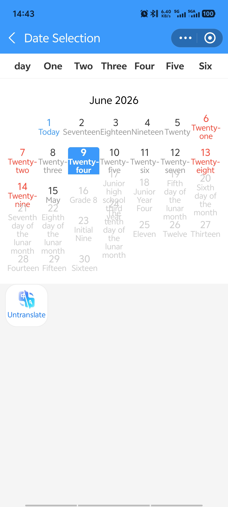
9 Choose your train
You'll see a list of trains with departure times, arrival times, and durations. Hangzhou to Beijing is about 1,200 km — the fastest train covers that in 4 hours and 35 minutes. That's kind of insane, right? Pick the one that fits your schedule. Faster trains cost slightly more.
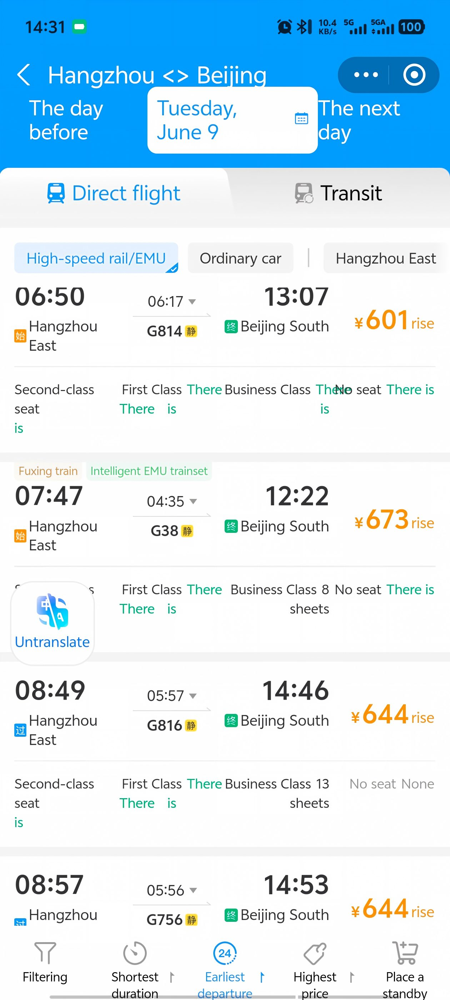
10 Choose your seat class
After selecting a train, you'll see the seat options. There are typically four types —Second Class (affordable, comfortable), First Class (wider seats, more legroom), Business Class (lie-flat, lounge access), and standing tickets (don't). See the seat class comparison above for details. Choose based on your budget and trip length — for anything over 4 hours, First Class is worth the upgrade.
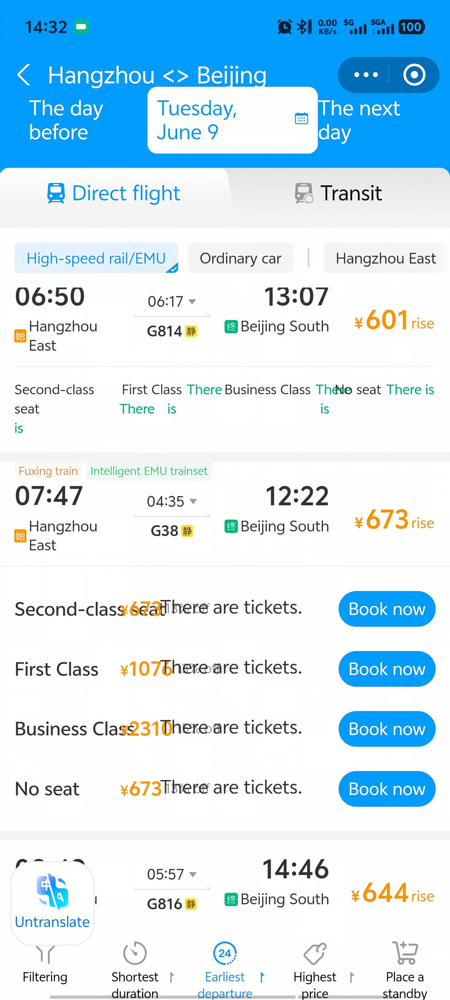
11 Add passenger information
After choosing your seat class, tap Select passenger type to enter your details.
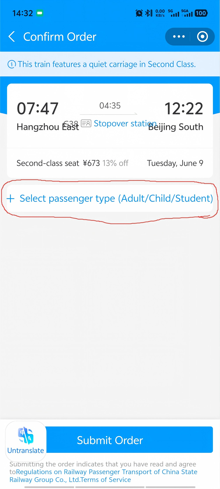
12 Enter your passport details
This is the most important screen. Three fields to fill:
- Name — enter exactly as it appears on your passport
- ID type — tap to open the dropdown and select "Foreign passport" (or the option matching your document)
- ID number — enter your passport number exactly as printed
If any of these don't match your passport exactly, you won't get through the gate. Double-check every character.
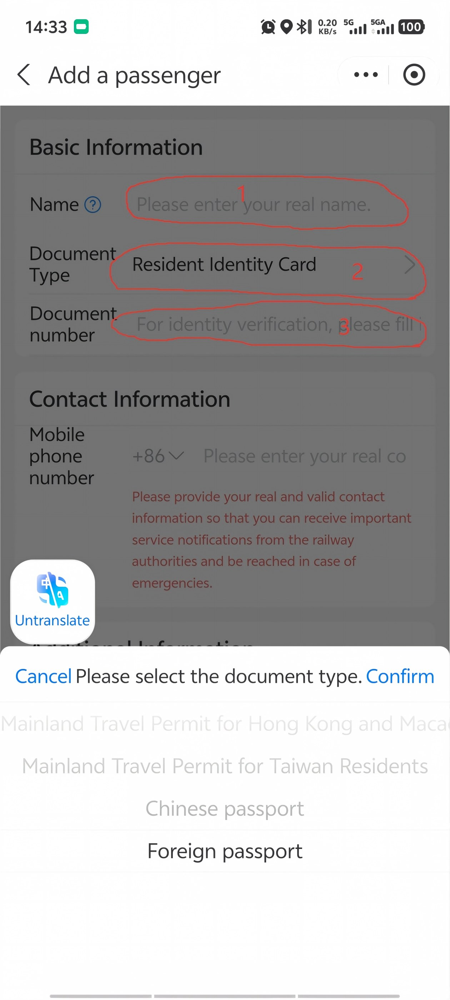
13 Select passenger type and complete payment
Under Additional Information, select Adult or Child as needed. Then tap Complete at the bottom to proceed to payment. Pay with Alipay (your linked foreign card works). Once payment goes through, your ticket is confirmed — your passport number is now linked to that train.
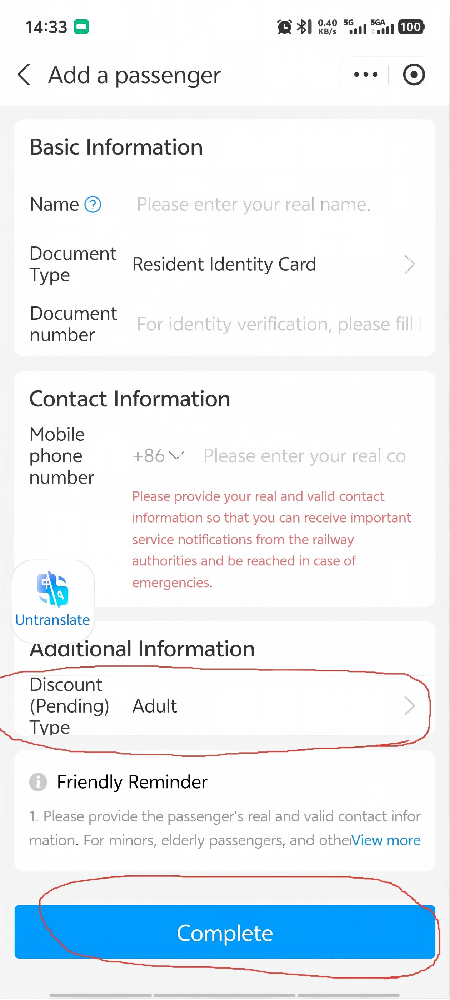
At the Station — Step by Step
Many of China's train stations are enormous. Here's exactly what to do, in order:
1 Arrive Early
For your first trip: 60 minutes before departure. Once you know the routine: 30–60 minutes is fine. The bottleneck is security — most major stations have airport-style scanners for luggage and body. Lines can be 5 minutes or 25 minutes. You never know. Budget the time.
2 Security Check
Put your bags on the conveyor belt, walk through the metal detector. Same as an airport but faster — you don't need to take out liquids or laptops. Your passport stays in your hand.
3 Find Your Gate
After security, look up at the giant departure board. Find your train number (e.g., G12). It'll show: departure time, destination (in Chinese — match the characters to your ticket), gate number, and status. Gates are numbered (e.g., "A12" or "B5"). Follow the signs — they're in English and Chinese.
4 Wait (Don't Wander)
Gates usually show up on the board 15–20 minutes before departure. Until then, grab a coffee or sit near your gate area. Convenience stores and fast food (KFC, McDonald's, local noodle shops) are in every station. Prices are slightly higher than outside — a coffee is ¥25–35 ($3.50–5.00).
5 Boarding
When your gate opens, you'll see two lines: manual check (passport) and automatic gate (Chinese ID card). Take the manual line. The automatic gates only work with Chinese national ID cards — if you queue there with a foreign passport, you'll hold up the line and feel embarrassed. Just go to the manual counter; it's always next to the automatic gates. An attendant will scan your passport, check your face against the photo, and wave you through to the platform.
On the platform: look down. Carriage numbers are painted on the ground. Find your carriage (e.g., Car 6), stand in the marked area. The train arrives, doors open, you get on. Boarding may close a few minutes before departure — not at departure time. Be on board early.
On the Train
Once you're seated, it's smooth sailing. Here's what to expect:
- Snacks and drinks: Staff walk through selling coffee, tea, snacks, and sometimes hot meals. Prices: ¥5–15 for drinks, ¥15–25 for meals. You can also bring your own food — everyone does. Instant noodles are a Chinese train tradition.
- Hot water: Most carriages have a free hot water dispenser. Bring a cup or instant noodles. This is not a joke — hot water is everywhere in China and it's genuinely useful.
- Power outlets: Under your seat (Second Class) or in the armrest (First/Business). China uses Type A and Type I sockets — same voltage as most of the world (220V). A universal adapter is useful but often not needed for USB charging — most trains also have USB ports now.
- WiFi: Most G-series trains have free WiFi, but it's China's intranet — you can access Chinese sites and apps, but Google, Instagram, WhatsApp are blocked. Use your eSIM or VPN if you need Western sites.
- Toilets: Generally clean. Western-style toilets at one end of each carriage, squat toilets at the other. Bring your own tissues — they sometimes run out.
- Quiet car rule: If you see a car marked "Quiet Carriage" (静音车厢), phones on silent, no loud conversations. It's enforced — people will shush you.
Arriving — Don't Put Your Passport Away
At your destination, you'll need your passport to exit the station — just like boarding, the exit gates scan your passport to verify your ticket. Same rule applies: manual lane for foreign passports. Don't put your passport away until you're outside the station. If you lose it between the train and the exit gate, you'll be stuck explaining things to station staff for a while.
Route Cheat Sheet
Popular high-speed routes for travelers, with approximate times and Second Class prices:
Prices fluctuate by season and how far in advance you book. Chinese New Year and National Day (first week of October): book weeks ahead or don't travel.
FAQ — The Questions Everyone Asks
"Can I buy tickets with a foreign credit card?"
Trip.com: Yes — Visa, Mastercard, Amex all work. 12306: Yes, via Alipay or WeChat Pay linked to your foreign card. Direct foreign card payment on 12306 is still hit-or-miss — use Alipay as a bridge.
"Do I need to print a physical ticket?"
Not anymore. Your passport is your ticket. When you book, your passport number is linked to the reservation. At the gate, the attendant scans your passport and the system knows you have a valid ticket. That said, if you're nervous, you can print a paper ticket at any station machine — it's a receipt, not required for boarding.
"How early should I book?"
Tickets go on sale 15 days before departure. Popular routes sell out on the first day — especially Friday evenings, Sunday afternoons, and any day during Chinese holidays. Book as soon as your dates are firm. For Shanghai–Beijing on a Friday: book at exactly 15 days out, the moment tickets release. For Shanghai–Hangzhou on a random Tuesday: you can probably book 2–3 days before.
"What if I miss my train?"
You can change your ticket to a later train (same route) at the ticket counter — usually for a small fee (¥5–10) if you do it before departure. After departure, the ticket is void and you'll need to buy a new one. If you're running late and know you'll miss it, change the ticket in the app before the departure time.
"Can I bring luggage? How much?"
Officially: 20 kg per adult. In practice: nobody weighs your bag. If you can carry it, you can bring it. Overhead racks fit standard carry-on sizes. Large suitcases go in the luggage area at the end of each carriage. Trains are more generous than airlines — I've seen people bring massive suitcases, boxes of fruit, and once, a framed painting.
"Is it safe?"
Extremely. China's high-speed rail has a strong safety record. Stations are well-lit, staffed, and covered in security cameras. Solo travelers — including women — report feeling generally safe. The biggest danger is missing your train because you queued in the wrong line.
Common Mistakes Foreigners Make
Every one of these has happened to someone I know. Learn from their pain.
Mistake #1 — Booking the wrong station
You search "Shanghai" and pick the first result. Later you realize your train leaves from Shanghai Hongqiao — but you're standing at Shanghai Station, 40 minutes away by metro. Most Chinese cities have 2 — train stations. Always check the exact station name on your booking, not just the city.
Mistake #2 — Queuing in the Chinese ID line
You see two boarding lines. One is fast — people just scan their phones and walk through. You join it. When you reach the gate, the machine beeps red. It only reads Chinese national ID cards. Foreign passports go through the manual lane with an attendant. Look for a staff member, not a scanner.
Mistake #3 — Forgetting your passport
You packed everything — phone, charger, snacks, ticket screenshot. But your passport is in the hotel safe. Without your physical passport, you cannot board. Period. A photo of your passport won't work. A driver's license won't work. Nothing else works.
Mistake #4 — Booking too late for holidays
You decide to take a train during Chinese New Year or National Day (October 1–7). You try to book three days before. Every train is sold out. Every single one. During these periods, 1.5 billion trips happen in two weeks. Book the moment tickets release — 15 days out, at 8am China time.
Mistake #5 — Trusting Google Maps for the station
Google Maps in China is unreliable — it might place the station entrance on the wrong side of the building, or route you to a staff-only gate. Use Apple Maps (works well in China) or Amap (高德地图). Both give accurate walking and metro directions to the correct entrance.
Mistake #6 — Showing up 10 minutes before departure
You think "the train leaves at 2pm, I'll get there at 1:50." But you forgot: security line (5–20 min), finding your gate in a station the size of a small city (5–20 min), and the fact that boarding closes 3–5 minutes before departure. That 2pm train? You need to be through security by 1:40 at the latest. For your first trip, arrive 45–60 minutes early.
Pro Tips From Someone Who Rides These Monthly
- Screen the Chinese name of your destination. Station names on departure boards are in Chinese. Screenshot the characters from your booking confirmation so you can match them on the board. Example: 上海 (Shanghai), 北京 (Beijing), 杭州 (Hangzhou), 南京 (Nanjing).
- Big cities have multiple stations. Shanghai has Hongqiao (虹桥), Shanghai Station (上海站), and Shanghai South (上海南). Beijing has Beijing South (北京南), Beijing West (北京西), and more. Double-check which station your train departs from — they can be an hour apart by metro.
- Seat selection matters. Window seat = A (last letter of row). Aisle seat = C or D. Middle seat = B. If you book on Trip.com, you can pick. On 12306, it's assigned — but you can change it once if you're quick.
- Download shows and podcasts before your trip. Train WiFi won't let you stream YouTube or Netflix. Download entertainment at your hotel before heading to the station.
- Bring snacks from outside. Station food is overpriced and the hot meals on board are — inconsistent. Grab a sandwich, fruit, and a bottle of water before you enter the station. Or do as the locals do: bring instant noodles and use the hot water dispenser.
- Chinese holidays = don't travel. Chinese New Year (late January / early February) and National Day (October 1–7) are the world's largest human migration. Trains are packed, tickets sell out instantly, and stations are chaos. If you're visiting during these periods, book everything weeks in advance or — better — stay in one city.
You'll Also Need These Guides
Getting around China is a system. Here's what to set up next:
Get the Free China Arrival Checklist
The exact setup guide I send to friends before they visit China. High-speed rail cheat sheet, Alipay walkthrough, VPN picks — all in one PDF.
Get the Free Checklist